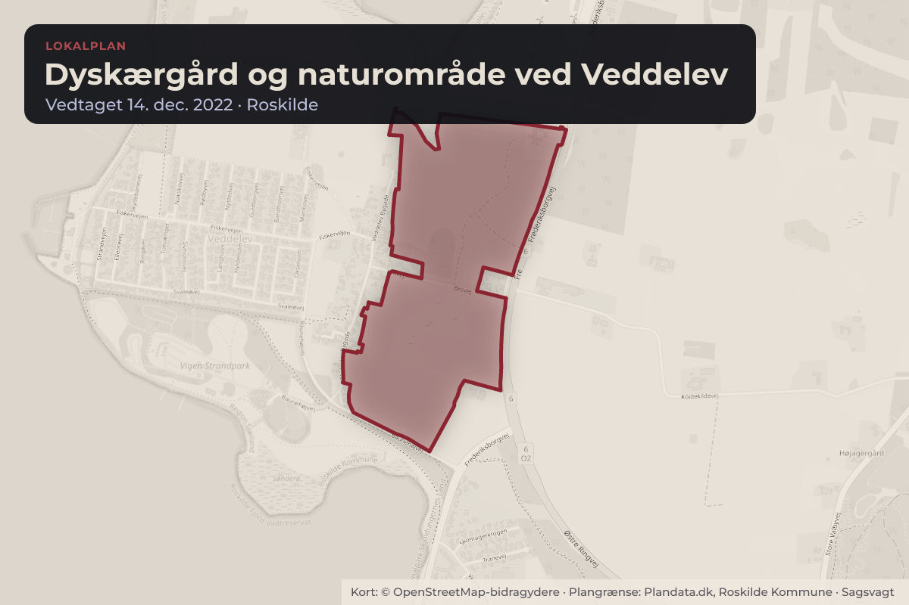
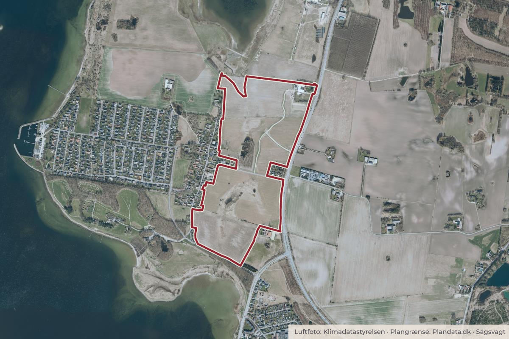

Besluttet 18. august, Plan- og Teknikudvalget, Roskilde
Nyt vejnavn - lokalplan 704 for Dyskærgård og naturområde ved Veddelev
Klima og grøntByggeri og lokalplaner

Kort: © OpenStreetMap-bidragydere. Plangrænse: Plandata.dk, Roskilde Kommune.

Kort fortalt
- Hvem
- Plan- og Teknikudvalget, Roskilde Kommune
- Hvornår
- Tirsdag 18. august 2026
- Status
- Besluttet. Godkendt. Stedfortræder: Mette Truesen (F) Fremstilling.Beslutningen er forkortet her. Læs hele beslutningen
Er noget forkert her? Skriv til os
Læs hele sagen Kommunens egen tekst
Indstilling
Forvaltningen indstiller, at vejnavnet ”Dyskærgårdsvej” godkendes.
Beslutningskompetence
Plan- og Teknikudvalget
Sagsfremstilling
Plan- og Teknikudvalget godkendte på møde den 29. november 2022, punkt 193, forslag til
lokalplan 704 for Dyskærgård og naturområde ved Veddelev. Lokalplanen muliggør en
nænsom omdannelse af Dyskærgård, så den kan anvendes til hovedsæde for Liljeborgfonden.
Lokalplanen sikrer endvidere, at et landbrugsareal mellem Veddelev og Frederiksborgvej
omdannes til offentlig tilgængelig natur med sammenhæng til fjorden og strandengene.
Vejdirektoratet meddelte dengang, at Dyskærgårds ændrede anvendelse til kontorfaciliteter
forudsatte, at den daværende overkørsel til Frederiksborgvej blev lukket og erstattet af en ny
adgangsvej uden direkte opkobling til den statslige vej. Lokalplanen udlagde derfor en ny
adgangsvej til gården via Brovej.
Forvaltningen foreslår, at adgangsvejen navngives ’Dyskærgårdsvej’, da den har til formål at
betjene Dyskærgård. Vejnavnet skal være med til at tydeliggøre for besøgende til Dyskærgård,
at det er denne vejadgang, der skal benyttes efter lukning af den direkte adgang fra
Frederiksborgvej.
Økonomi
Sagen har ingen bevillingsmæssige konsekvenser i 2026.
Beslutning
Godkendt.
Fraværende: Mikkel Grøndahl (C) og Julia Hunt (F)
Stedfortræder: Mette Truesen (F)
Fremstilling
Kilde: Roskilde Kommune, Plan- og Teknikudvalget, referat fra mødet tirsdag 18. august 2026, punkt 8. Læs den originale sag hos kommunen.